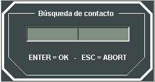

Pantalla Táctica
La Pantalla Táctica, situada en el monitor superior, incluye la Presentación Táctica y el Área de Información Táctica.

Presentación Táctica:
Consiste en la presentación gráfica de la Situación Táctica que observa la unidad. Esta presentación se realiza mediante una cartografía digital sobre la que se muestran, con simbología NTDS, STANAG-4420 o Simbología Inicial de Detecciones, los contactos (trazas y demoras) obtenidos por el conjunto de sensores de la unidad y recibidos mediante sus comunicaciones si la consola es de alumno, o las unidades (trazas) si la consola es de instructor. La descripción de la simbología empleada se encuentra en los apartados Preparación – Ejercicios, Modelística – Sensores y Anexos – Simbología.
La cartografía digital sólo es mostrada si la unidad tiene capacidad de Cartografía Electrónica, en cuyo caso, se presentarán las cartas electrónicas incluidas en el Escenario del Ejercicio (ver Manual de Preparación – Preparación de Escenarios – Edición de Escenarios y Manual de Preparación – Preparación de Ejercicios – Unidades). En caso contrario, la visión cartográfica se limitará a la línea de costa dentro del alcance de los sensores Radar de los que disponga la unidad.
El origen de los datos cartográficos digitales de la presentación gráfica del escenario táctico puede ser S‑57 o VPF y se muestran siguiendo las recomendaciones para los sistemas ECDIS (Electronic Chart Display and Information System) en cuanto a la presentación de objetos. Sobre la carta se muestran también los objetos gráficos Rutas, Áreas y Puntos de distintos tipos que hayan sido incorporados al escenario durante la Preparación.
Para facilitar una visión sinóptica de la situación táctica, las trazas (que representan los contactos que detecta la unidad de un alumno o todas las unidades y entidades perecederas del Ejercicio para el instructor) son mostrados con vector velocidad y etiqueta descriptiva.
El vector velocidad se compone partiendo del centro del icono del móvil y con una orientación coincidente con el rumbo del móvil. Su longitud es descriptiva de la velocidad del mismo, es decir, variará el tamaño según su valor con una dependencia logarítmica.
Las etiquetas pueden ser mostradas en modo Normal, en cuyo caso incluyen únicamente el identificador de la traza (nombre de la unidad si la consola es de instructor o track number del contacto si la consola es de alumno), o Extendida, en cuyo caso incluyen el identificador de la traza (nombre de la unidad si la consola es de instructor o track number del contacto si la consola es de alumno), su rumbo, velocidad y, si la consola es de alumno, las iniciales de los sensores o equipos de comunicaciones con los que se obtiene el contacto (M: Manual, V: Visual, I: Infrarrojo, P: Periscopio, R: Radar, ESM: ESM, ECM: ECM, MAD: MAD, IFF: IFF, T: TACAN, SA: Sonar Activo, SP: Sonar Pasivo, SP: Procesador de Sonoboyas, CMSM: COMSM, L11: Link 11, L16: Link 16, DL: Data Link, S: Satélite, ?: si los sensores propios y el Link 11 proporcionan datos de clasificación o identificación distintos).
Para facilitar al operador la localización rápida de una traza sobre la pantalla táctica, al pulsar la secuencia de teclas CTRL F se muestra la siguiente ventana:

El operador puede introducir un número de traza, y pulsar la tecla Enter, de esta manera, el hook se sitúa sobre la traza y la presentación táctica se centra en el hook. Si se pulsa la tecla ESC, la ventana se cierra sin modificar el centro de la pantalla.
Por otro lado, las detecciones pasivas acústicas, electrónicas y de comunicaciones son mostradas en la Presentación Táctica mediante demoras. Las demoras se representan mediante una línea desde el punto de origen de la detección hasta el límite de la Presentación Táctica. Las demoras tienen distinto color e incorporan un símbolo distinto según el tipo de detección que se muestra cercano al límite de la presentación para facilitar su visión. También incluyen una etiqueta junto al símbolo en la que se muestra el Track Number de la detección. En la siguiente tabla se resumen los símbolos y colores empleados:
| Tipo Detección | Sensor | Símbolo | Color |
| Electrónica | ESM | E | Azul |
| Acústica | Sonar Pasivo, Sonar Activo, Sonoboya | A | Rojo |
| Comunicaciones | COMSM | E | Verde |
| Detecciones en pérdida | Cualquiera | Según sensor | Gris |
En la siguiente captura de la Pantalla Táctica se ilustran la representación de las trazas y demoras:

Mediante la barra de menú de la Pantalla Táctica, el Alumno puede acceder a la siguiente funcionalidad asociada a la Presentación Táctica:
-
Archvo →
- Imprimir
- Salir
- Pantalla Completa
- Paralelos y Meridianos
- Escala
- Movimiento →
- Absoluto
- Relativo
- Etiquetas
- Simbología →
- STANAG pequeño
- STANAG grande
- NTDS pequeño
- NTDS grande
- Banderas nacionales
- Administración de la cartografía
- Modo Hook
- Modo Zoom
- Secuencia Trazas
- Hook Automático
- Marca Automática
- Dibujos Libres
- Anillos de Distancia
- Líneas de Marcación
- Línea de Medición
- Cortinas
- Marca Esclava
- Historia
- Sectores →
- Armas
- Sensores
- Modo Automático
- Zonas del Ejercicio →
- Mostrar Todas
- Mostrar zonas de esfuerzo pesquero
- Mostrar zonas de tráfico mercante
- Mostrar zonas de interferencia
- Mostrar zonas minadas
- Mostrar zonas meteorológicas
- Mostrar zonas PIM
- Mostrar aerovías
- Mostrar zonas ROE
- Mostrar zonas Zigzag
- Modo Automático
- Cálculos →
- CPA
- Interceptación
- Posición Futura
- Acercamiento / Alejamiento
- Idioma
- Crear
- Modificar
- Borrar
- Restaurar TN
- Restaurar Categoría
- Enviar por Link 11
- Detecciones compiladas
- Tipos de Trazas
- Contenido
- Acerca de ...